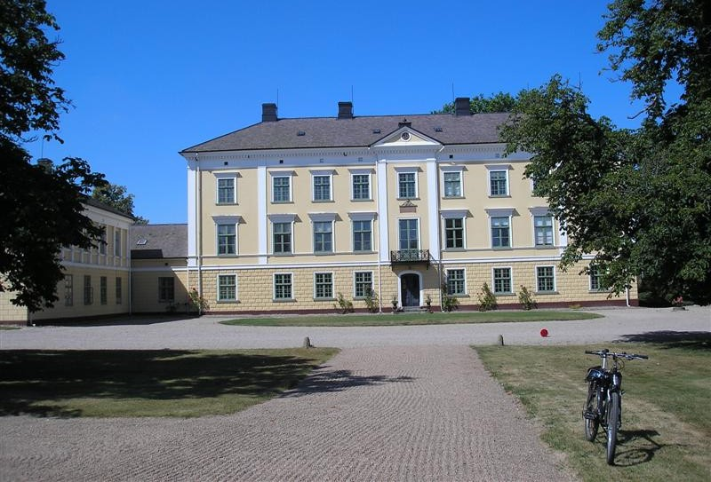

Om Anita på Börringekloster
Vårt kök är i grunden skånskt men med internationella influenser. Vi väljer gärna närproducerat och eko..
Kontakta ossVårt kök är i grunden skånskt men med internationella influenser. Vi väljer gärna närproducerat och eko..
Kontakta oss